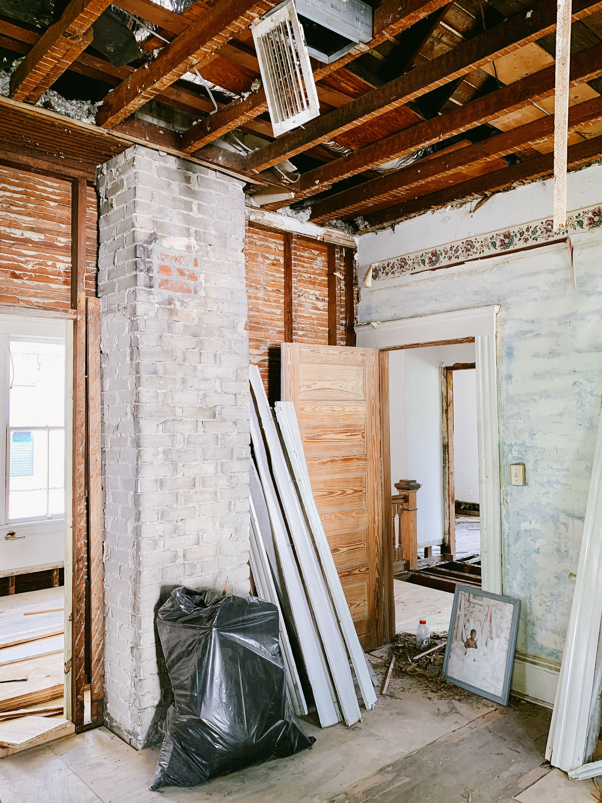

Understand the Project
We begin with the building, planned work, and available information.
Asbestos Assessments
Renovation, demolition, maintenance, and other building projects can disturb materials that aren't always identifiable by appearance alone.
An asbestos assessment helps establish what materials are present in the areas affected by the work—providing useful information for planning the project and determining appropriate next steps.

Planning Before Disturbance
Asbestos can be present in a variety of building materials, including flooring, mastics, insulation, ceiling materials, wall systems, roofing components, and other products.
And there's an important limitation:
You generally cannot determine whether a material contains asbestos just by looking at it.
Understanding the materials that may be disturbed is therefore an important part of planning work in an existing building.
Not sure what needs to be assessed?
Tell us about the building and the work you're planning. We'll help determine an appropriate assessment scope.
The IES Approach
An effective assessment begins with understanding what you intend to do with the building and which areas or materials may be affected.
We begin with the building, planned work, and available information.
Accessible areas are evaluated to identify suspect building materials relevant to the assessment.
Representative samples are collected when appropriate and submitted for laboratory analysis.
Observations and analytical results are organized into clear, useful assessment documentation.
What We Look For
Depending on the property and project, materials evaluated may include:
Floor tile, sheet flooring, backing materials, adhesives, and related components.
Joint compound, plaster, textured finishes, ceiling materials, and other finishes.
Pipe insulation, fittings, equipment insulation, and other thermal-system materials.
Roofing components, sealants, siding products, and other exterior materials where applicable.
Additional materials identified based on their appearance, use, location, and the scope of the project.
The appropriate assessment depends on the building and the work being planned. Not every project involves the same materials, areas, or sampling strategy.

From Fieldwork to Findings
The value of an assessment isn't simply in collecting samples.
It's in connecting field observations, material and sample locations, photographs, laboratory results, and project context into information that can actually be used.
When laboratory analysis is appropriate, representative samples are collected and the results incorporated into the assessment documentation.
What You Receive
An IES asbestos assessment is designed to provide a clear record of what was evaluated and what was found.
The areas evaluated and their relationship to the planned work.
Identification of suspect materials and representative sampling locations.
Images providing useful context for materials, locations, and observed conditions.
Analytical results associated with collected samples.
An organized explanation of what was identified and where.
Information to help relate the findings to the planned work.
Want to see how IES communicates environmental findings?
View an Example AssessmentWhen an Assessment May Be Useful
Existing walls, flooring, ceilings, mechanical systems, or other materials may be altered or removed.
A building or portion of a structure is scheduled for demolition.
Planned work may disturb existing building materials.
A material is encountered during a project and needs to be understood before work continues.
Previous documentation is unavailable, incomplete, or doesn't address the current project area.
Asbestos requirements can vary depending on the property, activity, and applicable regulations. The appropriate scope should be determined for the specific project.
After the Assessment
Sometimes laboratory analysis indicates that sampled materials do not contain asbestos.
Sometimes asbestos-containing material is identified and needs to be accounted for before work proceeds.
Either way, the purpose of the assessment is the same:
We're not trying to find asbestos.
We're trying to find the answer.
The findings can then support project planning, coordination with contractors or other professionals, and appropriate next steps for the work.
Start a Conversation
You don't need to determine the assessment scope yourself. Tell us about the property, what you're planning, and what you already know. We'll help determine an appropriate next step.
Request a ConsultationNorth Carolina and Beyond
Continue Learning
A practical guide to what property owners and project teams should understand before existing building materials are disturbed.